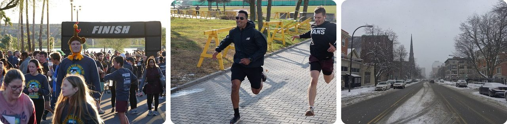

🌍 톱 10 추수감사절과 연말 쇼핑의 숨은 역사
2026년 11월 23일
1. 🎭 추수감사절이 원래 '사탕 주세요' 하는 날이었어요
 1870년쯤부터 1930년대까지, 뉴욕의 아이들에게는 '래거머핀 데이'(Ragamuffin Day, '누더기 아이의 날')라는 추수감사절 풍습이 있었어요. 아이들은 찢어진 옷을 입고 거지처럼 꾸민 다음, 어른들에게 간식과 동전을 달라고 돌아다녔어요.
1870년쯤부터 1930년대까지, 뉴욕의 아이들에게는 '래거머핀 데이'(Ragamuffin Day, '누더기 아이의 날')라는 추수감사절 풍습이 있었어요. 아이들은 찢어진 옷을 입고 거지처럼 꾸민 다음, 어른들에게 간식과 동전을 달라고 돌아다녔어요.
시간이 지나면서 분장은 점점 더 요란해졌고, 아이들은 누더기뿐 아니라 온갖 의상을 입기 시작했어요. 옛날 유리판 사진에 찍힌 '추수감사절 가면꾼'들을 보면, 가면과 커다란 모자를 쓴 아이들이 길에서 누가 던져 준 동전을 서로 주우려고 뒤엉켜 있어요.
그런데 어른들이 이 조르기에 질려 버렸어요. 1930년대에 뭔가를 달라고 하는 부분이 빠졌고, 1950년대에는 풍습 전체가 사라졌어요. 분장하고 모르는 사람에게 사탕을 받는 일은 결국 핼러윈으로 옮겨 갔어요.
그러니까 분장하고 사탕 받는 날이 예전엔 칠면조 그레이비와 같이 왔던 거예요.
2. 📅 1939년, 텍사스에는 추수감사절이 두 번 있었어요
 1939년 11월에는 목요일이 다섯 번 있었어요. 그래서 '마지막 목요일'에 지내던 추수감사절이 11월 30일이 됐죠. 가게 주인들은 걱정했어요. 크리스마스까지 쇼핑할 날이 24일밖에 안 남았거든요. 큰 백화점 회사의 대표가 프랭클린 루스벨트 대통령에게 추수감사절을 일주일 당겨 달라고 부탁했어요.
1939년 11월에는 목요일이 다섯 번 있었어요. 그래서 '마지막 목요일'에 지내던 추수감사절이 11월 30일이 됐죠. 가게 주인들은 걱정했어요. 크리스마스까지 쇼핑할 날이 24일밖에 안 남았거든요. 큰 백화점 회사의 대표가 프랭클린 루스벨트 대통령에게 추수감사절을 일주일 당겨 달라고 부탁했어요.
루스벨트는 정말로 날짜를 11월 23일로 옮겼어요(딱 87년 전 오늘이에요). 그런데 휴일은 주마다 따로 정하거든요. 그래서 나라가 갈라졌어요. 23개 주는 새 날짜를, 22개 주는 옛 날짜를 따랐고, 콜로라도, 미시시피, 텍사스는 아예 이틀 다 쉬었어요. 애틀랜틱시티 시장은 이걸 '프랭크스기빙'(Franksgiving)이라고 놀렸고, 미국인의 62%가 이 변화를 싫어했어요.
그리고 반전이 있어요. 1941년 정부 조사에서, 늘어난 일주일이 판매를 별로 늘리지 못했다는 결과가 나왔어요. 같은 해 의회는 추수감사절을 11월 넷째 목요일로 정했고, 지금도 그대로예요.
한마디로, 대통령이 쇼핑객을 위해 명절을 옮겼는데 정작 쇼핑객은 오지 않았던 거예요.
3. 🚓 '블랙 프라이데이'는 필라델피아 경찰의 불평에서 시작됐어요
 추수감사절 다음 날을 '블랙 프라이데이'라고 부른 가장 오래된 기록은 1951년의 한 공장 잡지예요. 그날 '아프다'고 전화해서 나흘 연휴를 만드는 노동자들을 가리키는 말이었어요.
추수감사절 다음 날을 '블랙 프라이데이'라고 부른 가장 오래된 기록은 1951년의 한 공장 잡지예요. 그날 '아프다'고 전화해서 나흘 연휴를 만드는 노동자들을 가리키는 말이었어요.
비슷한 시기에 필라델피아 경찰도 그날을 블랙 프라이데이라고 부르기 시작했어요. 시내에 차가 꽉 막히고 쇼핑객이 넘쳐 났거든요. 1961년에 필라델피아는 좀 더 밝은 이름인 '빅 프라이데이'(Big Friday)를 밀어 봤지만, 아무도 쓰지 않았어요. 1985년까지도 신시내티와 로스앤젤레스의 가게들은 이 말을 들어 본 적이 없었어요.
흔히 듣는 밝은 이야기, 즉 가게들이 이날 드디어 '적자'(돈을 잃는 상태)에서 '흑자'(돈을 버는 상태)로 바뀐다는 설명은 나중에 생겼어요. 이 설명이 처음 인쇄된 건 1981년이에요. 가게들이 이 우중충한 이름에 더 그럴듯한 이유를 붙이고 싶었던 거죠.
다시 말해, 이름은 짜증 난 경찰한테서 나왔고, 행복한 설명은 나중에 덧붙여진 거예요.
4. 🎈 메이시스는 퍼레이드 풍선을 하늘로 날려 보내고 현상금을 걸었어요
 1928년, 메이시스는 퍼레이드 풍선에 그냥 공기 대신 헬륨을 넣기 시작했어요. 그래서 풍선이 둥둥 떴죠. 퍼레이드가 끝나자 풍선 디자이너는 풍선 다섯 개를 그냥 놓아 버렸어요. 풍선은 천천히 바람이 빠져서 일주일쯤 뒤에 내려오게 만들어졌고, 찾은 사람은 100달러를 받았어요. 요즘 돈으로 1,880달러쯤이에요.
1928년, 메이시스는 퍼레이드 풍선에 그냥 공기 대신 헬륨을 넣기 시작했어요. 그래서 풍선이 둥둥 떴죠. 퍼레이드가 끝나자 풍선 디자이너는 풍선 다섯 개를 그냥 놓아 버렸어요. 풍선은 천천히 바람이 빠져서 일주일쯤 뒤에 내려오게 만들어졌고, 찾은 사람은 100달러를 받았어요. 요즘 돈으로 1,880달러쯤이에요.
이게 하늘 보물찾기가 됐어요. 1931년, 유명한 비행사 클래런스 체임벌린이 하늘에서 용 풍선을 발견하고, 비행기 날개 끝으로 용의 머리를 댕강 잘라 낸 다음 조각을 가지고 내려와 25달러 상금을 받았어요. 파란 하마 풍선은 엠파이어 스테이트 빌딩 너머로 날아가서 끝내 찾지 못했어요.
메이시스는 1932년에 풍선 날리기를 그만뒀어요. 똑같은 묘기를 해 보려던 초보 여성 비행사가 비행기를 추락시킬 뻔했거든요.
집채만 한 유리병 편지라고 생각하면 돼요.
5. 🚒 미국에서 가장 오래된 추수감사절 퍼레이드는 메이시스 것이 아니에요
 미국에서 가장 오래된 추수감사절 퍼레이드는 필라델피아에 있어요. 1920년에 시작해서 메이시스보다 4년 빨라요. 연말 쇼핑객이 모두 자기네 장난감 층으로 오길 바랐던 큰 백화점, 김벨스(Gimbels)가 열었어요.
미국에서 가장 오래된 추수감사절 퍼레이드는 필라델피아에 있어요. 1920년에 시작해서 메이시스보다 4년 빨라요. 연말 쇼핑객이 모두 자기네 장난감 층으로 오길 바랐던 큰 백화점, 김벨스(Gimbels)가 열었어요.
직원 50명 넘게 분장을 하고 마켓 스트리트를 행진했어요. 마지막에는 산타가 백화점에 도착해서, 소방차 사다리를 타고 8층 장난감 매장까지 올라갔어요.
김벨스는 1986년에 문을 닫을 때까지 이 퍼레이드를 열었어요. 백화점이 없어진 뒤에도 퍼레이드는 계속됐고, 지금도 추수감사절마다 열려요.
그러니까 첫 대형 추수감사절 퍼레이드는 "우리 장난감 층에 쇼핑하러 오세요"를 아주 멋지게 말하는 방법이었던 거예요.
6. 🏃 추수감사절 '터키 트롯'이 보스턴 마라톤보다 오래됐어요

뉴욕주 버펄로는 1896년부터 해마다 추수감사절에 '터키 트롯'(Turkey Trot, '칠면조 달리기')이라는 경주를 열어요. 그래서 보스턴 마라톤보다 다섯 달쯤 먼저 시작됐어요. 델라웨어 애비뉴를 따라 약 5마일(8km)을 달려요.첫 경주에는 흙길에서 고작 여섯 명이 뛰었고, 그중 네 명만 완주했어요. 1899년에는 부정행위 사건도 있었어요. 버펄로 팀의 한 선수가 코스 일부를 마차를 타고 가는 바람에, 그 팀이 로체스터 팀에게 졌어요.
날씨 때문에 취소된 적은 한 번도 없어요. 버펄로의 엄청난 눈보라 때도요. 2000년에는 시가 경주 코스의 눈부터 치워서 대회가 열릴 수 있게 했어요. 2011년에는 13,200명까지 참가할 수 있게 됐어요.
한마디로, 130년째 이어지는 명절 달리기예요.
7. 🍒 1959년, 한 번의 소동으로 크랜베리가 식탁에서 사라질 뻔했어요
 1959년 11월 9일, 추수감사절을 몇 주 앞두고 미국 정부의 한 관리가 일부 크랜베리에서 암을 일으킬 수도 있는 제초제가 나왔다고 발표했어요. 그리고 어디서 재배했는지 알 수 없으면 크랜베리를 사지 말라고 했어요.
1959년 11월 9일, 추수감사절을 몇 주 앞두고 미국 정부의 한 관리가 일부 크랜베리에서 암을 일으킬 수도 있는 제초제가 나왔다고 발표했어요. 그리고 어디서 재배했는지 알 수 없으면 크랜베리를 사지 말라고 했어요.
곧바로 난리가 났어요. 몇몇 도시와 주는 크랜베리 판매를 금지했고, 많은 식료품점이 크랜베리를 치웠고, 생크랜베리 판매는 73%나 줄었어요. 신문들은 대신 수박 껍질 피클을 먹으라고 권했어요. 아이젠하워 대통령의 추수감사절 저녁에도 크랜베리 소스 대신 사과 소스가 올라갔어요.
진짜 위험은 아주 작았어요. 실험쥐에게 해를 끼친 양만큼 먹으려면 문제의 크랜베리를 수천 파운드나 먹어야 했거든요. 크랜베리 농부들은 발표가 있던 날을 '블랙 먼데이'라고 불렀어요.
다시 말해, 크랜베리는 사이버 먼데이보다 수십 년 먼저 자기만의 블랙 먼데이를 겪은 거예요.
8. 🥫 그린빈 캐서롤은 수프를 팔려고 만든 요리예요
 1955년, 도카스 라일리는 뉴저지주 캠던에 있는 캠벨 수프 회사의 시험 주방에서 일했어요. 캠벨 수프를 쓰는 요리법을 개발하는 게 그녀의 일이었어요. 한 신문 기사를 위해, 거의 모든 집에 이미 있는 재료로 빨리 만들 수 있는 요리가 필요했어요.
1955년, 도카스 라일리는 뉴저지주 캠던에 있는 캠벨 수프 회사의 시험 주방에서 일했어요. 캠벨 수프를 쓰는 요리법을 개발하는 게 그녀의 일이었어요. 한 신문 기사를 위해, 거의 모든 집에 이미 있는 재료로 빨리 만들 수 있는 요리가 필요했어요.
그녀는 그린빈(껍질콩), 크림 버섯 수프, 바삭한 튀긴 양파를 섞었어요. 처음에는 회사 사람들 반응이 별로였지만, 그녀는 계속 밀어붙였어요. 이 요리는 '그린빈 베이크'(Green Bean Bake)라는 이름으로 수프 캔에 인쇄됐고, 1960년대에는 추수감사절 단골 메뉴가 됐어요.
캠벨은 지금 자기네 크림 버섯 수프의 약 40%가 이 요리에 들어가고, 해마다 추수감사절 저녁 약 2,000만 번에 이 요리가 오른다고 해요. 미네소타에서는 이 수프가 하도 많은 캐서롤에 쓰여서 '루터교 접착제'라는 별명까지 붙었어요.
먹을 수 있는 광고라고 생각하면 돼요.
9. 📺 세계 최초의 TV 디너는 추수감사절 저녁이었어요
 1953년, 스완슨 회사가 첫 냉동 'TV 디너'를 팔았는데, 메뉴가 바로 추수감사절 음식이었어요. 칠면조, 옥수수빵 스터핑, 완두콩, 고구마였죠. 음식마다 알루미늄 쟁반의 칸에 따로 담겨 있었어요. 비행기 기내식 쟁반처럼요.
1953년, 스완슨 회사가 첫 냉동 'TV 디너'를 팔았는데, 메뉴가 바로 추수감사절 음식이었어요. 칠면조, 옥수수빵 스터핑, 완두콩, 고구마였죠. 음식마다 알루미늄 쟁반의 칸에 따로 담겨 있었어요. 비행기 기내식 쟁반처럼요.
쟁반째 오븐에 25분 데운 다음, TV 앞에서 쟁반에 담긴 그대로 먹으면 됐어요. 가격은 98센트였어요. 첫 생산분은 5,000개였는데, 1년 뒤 스완슨은 1,000만 개 넘게 팔았어요.
그리고 반전이 있어요. 유명한 이야기에 따르면, 추수감사절에 안 팔린 칠면조가 산더미처럼 남아서 그걸 처리하려고 만들었다고 해요. 그런데 이 이야기는 1996년에 한 스완슨 관리자가 한 말이고, 스완슨 가족과 옛 직원들은 사실이 아니라고 해요.
무릎 위에 올라가는 추수감사절 만찬 한 상이에요.
10. 💻 '사이버 먼데이'는 회사에서 하는 쇼핑에서 이름을 따왔어요
 '사이버 먼데이'라는 이름은 2005년 11월 28일, 미국의 큰 상점 단체인 전미소매협회(National Retail Federation)의 보도 자료에 처음 등장했어요. 그때는 아직 큰 쇼핑 날도 아니었어요. 1년 중 온라인 쇼핑이 많은 날로 겨우 12번째쯤이었거든요.
'사이버 먼데이'라는 이름은 2005년 11월 28일, 미국의 큰 상점 단체인 전미소매협회(National Retail Federation)의 보도 자료에 처음 등장했어요. 그때는 아직 큰 쇼핑 날도 아니었어요. 1년 중 온라인 쇼핑이 많은 날로 겨우 12번째쯤이었거든요.
뉴욕 타임스는 이렇게 설명했어요. 긴 주말 동안 가게에서 이것저것 구경한 수백만 명의 직장인이 월요일에 회사의 빠른 인터넷 앞으로 돌아와서 마음에 든 걸 샀다는 거예요.
그 전에도 온라인 쇼핑 날을 만들려는 시도가 있었어요. 2003년, 한 꽃 배달 사이트 직원이 추수감사절 전날을 '화이트 웬즈데이'(White Wednesday)로 하자고 했지만, 전혀 뜨지 못했어요. 사이버 먼데이는 떴고, 2020년에는 107억 달러로 당시 미국 역사상 온라인 쇼핑이 가장 많은 날이 됐어요.
수업 시간에 몰래 게임하는 것의 명절 버전이에요.
재미있는 사실
백화점은 아주 오래전부터 명절 전통을 만들어 왔어요. 일리노이주 피오리아에서는 1887년부터 해마다 추수감사절 다음 날 산타클로스 퍼레이드를 여는데, 이걸 시작한 게 동네 백화점인 Schipper & Block이에요. 김벨스 퍼레이드보다 33년 빠르고, 누군가 그날을 블랙 프라이데이라고 부르기 수십 년 전이에요. 장난감 층과 퍼레이드, 매장 산타가 있던 옛날 시내 대형 백화점들은 다음에 탐험해 볼 만한 큰 세계예요.
사진 출처 (Wikimedia Commons)
- #1: Thanksgiving Maskers LCCN2014689992.jpg by Bain News Service, publisher, Public domain
- #1: Thanksgiving Maskers scramble for pennies LCCN2014689988.jpg by Bain News Service, publisher, Public domain
- #1: Thanksgiving Maskers LCCN2014689993.jpg by Bain News Service, publisher, Public domain
- #2: President Franklin D. Roosevelt Carving the Thanksgiving Turkey - DPLA - a8d0c1276a8b1ab3fe7f230e75415f33.jpg by The National Archives. Office of the Archivist of the United States. Franklin D. Roosevelt Library. (6/30/1941 - 1949), Public domain
- #2: President Franklin D. Roosevelt addresses joint session of Congress, September 21, 1939.jpg by Associated Press, Public domain
- #2: Franklin and Eleanor Roosevelt FDR library cornerstone 1939.jpg by Acme Newspictures, Public domain
- #3: Black Friday at the Apple Store on Fifth Avenue, New York City, 2011.jpg by JoeInQueens from Queens, USA, CC BY 2.0
- #3: US-RETAIL-BLACK FRIDAY (flickr) by Diario Critico Venezuela, CC BY 2.0
- #3: Black Friday Sale Inflatable (22729837503).jpg by Rusty Clark - On the Air M-F 8am-noon from merritt usland FLA, CC BY 2.0
- #4: Macy's parade balloon inflation (11678).jpg by Rhododendrites, CC BY-SA 4.0
- #4: Clarence Chamberlin.jpg by Unknown authorUnknown author, Public domain
- #4: Macy's Parade Balloon (flickr) by Me in ME, CC BY 2.0
- #5: Mickey and Minnie Mouse at the Philadelphia Thanksgiving Day Parade (flickr) by chrisinphilly5448, CC BY-SA 2.0
- #5: Gimbels LOC4a18217v (cropped).jpg by Unknown authorUnknown author, Public domain
- #5: Curious George, Alvin and Oscar (flickr) by digitalART2, CC BY 2.0
- #6: Turkey Trot.jpg by BowenLarsen, CC BY-SA 4.0
- #6: Runners sprint to the finish line at the Turkey Trot (8769025).jpg by U.S. Army 105MPAD by Pfc. Kyle Kimble, Public domain
- #6: Snow over Delaware Avenue, Buffalo, New York - 20200207.jpg by Andre Carrotflower, CC BY-SA 4.0
- #7: Cranberry harvest, Kingston Massachusetts.jpg by Mathcar, CC BY-SA 4.0
- #7: Harvesting cranberries in Cranmoor Wisc.jpg by Jeff the quiet, CC0
- #7: Canned cranberry sauce - November 2023 - Sarah Stierch.jpg by Missvain, CC BY 4.0
- #8: Green bean casserole.jpg by Rick Kimpel from Spring, TX, USA, CC BY-SA 2.0
- #8: green beans casserole (flickr) by bradleygee, CC BY 2.0
- #8: Green Bean Casserole (flickr) by arnold | inuyaki, CC BY 2.0
- #9: Swanson TV Dinner Swiss Steak box - DPLA - 033da20203975e46c6b8f595f3419a71 (page 1).jpg by Campbell Soup Company, CC BY 4.0
- #9: 1960 Swanson TV Dinner Advertisement Life Magazine December 5 1960 (flickr) by SenseiAlan, CC BY 2.0
- #9: Frozen-TV-dinner-top-view.jpg by Sir Beluga, CC0
- #10: Woman shops online with a small shopping cart and cash in a modern office setting during the afternoon.jpg by Shixart1985, CC BY 2.0
- #10: Black Friday and Cyber Monday sign at the Intertoys, Rotterdam (2018).jpg by Donald Trung Quoc Don (Chữ Hán: 徵國單) - Wikimedia Commons.(Want to use this image?), CC BY-SA 4.0
- #10: Mini shopping cart placed on a table next to a laptop in a modern office setting.jpg by Shixart1985, CC BY 2.0


.jpg){kind=link}
.jpg){kind=link}

.jpg){kind=link}

.jpg){kind=link}


.jpg){kind=link}


.jpg){kind=link}